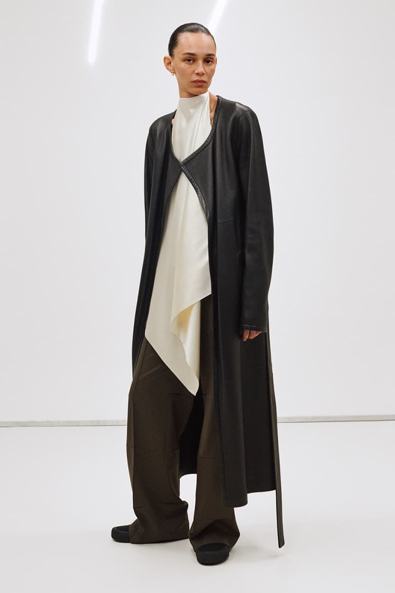

Five drops in, Phoebe Philo has stopped explaining herself. Collection E arrives without manifesto, without fanfare, without the apparatus of spectacle that the fashion industry has learned to mistake for conviction. It is simply clothes — and that, it turns out, is more than enough.
There is a particular kind of authority that comes from refusal. Not the theatrical kind, not the kind that announces itself in press releases and strategic absences, but the quieter, more durable version: the authority of a designer who has decided, once and for all, what she is willing to do and what she is not. Phoebe Philo’s fifth collection since relaunching her eponymous label in late 2023 is an exercise in that authority. Collection E, the autumn/winter 2026 offering, begins shipping in June and will deliver through December. It is not a runway collection. It was not shown. It simply appeared, like weather.
The pieces themselves operate in a register that Philo has been refining since her return: the intersection of the sculptural and the functional, where a garment’s beauty is inseparable from its utility. A wrap coat with peaked lapels and roomy sleeves manages to look simultaneously architectural and entirely comfortable, as if it had been engineered for the specific act of walking through a city in winter without thinking about what you are wearing. Beefy batwing bomber jackets — the adjective is Philo’s own kind of vocabulary, muscular and unfussy — sit alongside papery shirts so fine they seem almost translucent against the skin.
The weight of materials
Fabric, in this collection, is not a vehicle for design but its subject. Washed wool arrives with the soft, lived-in hand of something already loved. Pressed materials carry the crispness of intention. Leather appears in several weights — from the stiff, almost industrial panels of the overalls to the supple, buttery hides used for waders that climb the leg with quiet drama. Shearling, though, is where the collection finds its emotional centre. Cinched coats in cherry, ink, and cognac feel like the pieces around which everything else orbits. The long-haired shearling, with its tips dyed in variegated blondes and brunettes or deepened to black cherry and inky blue, has the quality of something rare and slightly wild, like pelts sourced from an animal that does not exist outside Philo’s imagination.
The silk T-shirt dresses with transparent panels occupy a different territory entirely. They are gentle, almost diffident, yet they demand a certain self-possession from the wearer — a willingness to be seen and not-seen simultaneously. Tuxedo trousers with structured trains drag behind the body like a memory of evening wear, formal in origin but stripped of ceremony. An inner tube peplumed tank-top manages the unlikely feat of being both absurd and completely wearable. A popcorn ruffled silk T-shirt has the nonchalance of something thrown on and the precision of something deliberated over for months.

Photography courtesy of Hypebeast
The uniform question
The utility twinsets — matching big trousers and bigger shirts in cotton, resembling industrial uniforms — raise a question that Philo has been circling since Céline: what happens when luxury dresses itself in the language of work? The answer, characteristically, is that it stops needing to justify itself. These are not “elevated basics” or “quiet luxury” or any of the other phrases the industry has generated to describe clothes that look expensive by refusing to look like much at all. They are simply garments made with extraordinary care from excellent materials, and their beauty lies precisely in the absence of persuasion.
The leather overalls belong to the same conversation. They are functional, unadorned, and yet their cut and proportion — the way they fall from the shoulder, the precise break at the ankle — betray a level of obsessive calibration that no factory floor has ever demanded. Philo designs clothes for women who already know what they want. The collection does not seduce. It confirms.
In a system that rewards noise, Philo has built something almost monastic — a label that speaks only when it has something worth saying.
Juliette MarchandOutside the calendar
It is worth pausing, five collections in, to consider what Philo’s model actually represents. She operates entirely outside the show system. There is no wholesale. There are no runway presentations, no front rows, no seating charts calibrated to signal hierarchies of influence. Each collection is released directly to customers through phoebephilo.com and a handful of select physical retailers, at whatever pace Philo determines. The drops are smaller in scale than a traditional seasonal collection, but each piece carries the weight of precision — every garment functions within a defined context, as if the collection were a sentence and each piece a word chosen for its exact shade of meaning.
This is not, as some have suggested, a rejection of fashion. It is a different model of luxury — one that dispenses with the intermediaries, the spectacle, the performative urgency of the calendar, and replaces them with something harder to replicate: trust. Philo trusts that her customer will find the work. Her customer trusts that the work will be worth finding. The relationship is almost monastic in its simplicity.
AnOther Magazine, reviewing the collection, arrived at a verdict that serves as its own kind of manifesto: “It’s just clothes, and that’s more than enough.” The statement reads as both observation and benediction. In an industry addicted to narrative — to “references” and “inspirations” and the relentless manufacture of context — Philo offers something almost radical: garments that require no explanation because they contain their explanation within themselves.
The film, and what remains
Collection E is accompanied by a dedicated short film, the “E Film,” available on the brand’s website. Like the collection itself, it is characterised by the absence of what one might expect. No models walking toward the camera with studied indifference. No soundtrack telegraphing mood. Instead, clothes in motion, worn by bodies that seem to have forgotten they are being filmed. The film functions less as advertisement than as evidence — proof that these pieces exist in the world, on actual frames, in actual light.
Philo has described the collection as “effortless sophistication,” a phrase that in any other context would read as marketing copy but here lands with the weight of editorial policy. Nothing superfluous. No noise. The sophistication is not in the flourish but in the restraint — in the decision to make a shearling coat in cherry rather than red, in the choice to leave a silk panel transparent rather than lined, in the quiet insistence that dressing is an act of self-knowledge rather than self-presentation.
Phoebe Philo Collection E is available from June 2026 through phoebephilo.com and select physical retailers. Deliveries continue through December 2026.
Photography courtesy of Hypebeast